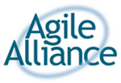
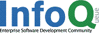
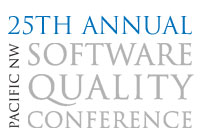

Agile Open Northwest
"Agile for Real"
Portland, Oregon - January 30-31, 2007
Sponsors
We're grateful to the sponsors who have made it possible for us to host this event at low cost. Please take a look at the materials they have made available at the conference.
|  | The Agile Alliance is a non-profit organization that supports individuals and organizations who use agile approaches to develop software. Driven by the simple priorities articulated in the Manifesto for Agile Software Development, agile development delivers value faster and with higher quality. For more information visit www.agilealliance.org. |  | InfoQ.com is an independent online community focused on change and innovation in enterprise software development, targeted primarily at the technical architect, team lead, and project manager. InfoQ serves the Java, .NET, Ruby, SOA, and Agile communities with daily news written by domain experts, articles, video interviews, video conference presentations, and mini-books. Agile specific content can be viewed at http://infoq.com/agile. |

|
SolutionsIQ, founded in 1979, provides a full range of IT services from Agile consulting, systems integration, development and testing, to project delivery, post-production support, staffing and best practices training delivered by industry thought leaders. For more information on services or to participate in Agile seminars visit www.SolutionsIQ.com. |

|
Instantiations, Inc. provides leading-edge software products, services and technologies for Eclipse, Java and Smalltalk. Based in Portland, Oregon, Instantiations was founded in 1997 by a team of internationally recognized pioneers in the field of component software technology. For more information, visit www.instantiations.com. |

|
Net Objectives, based in Bellevue, Washington, provides training and coaching services emphasizing the 3 P's of product development - Lean Principles for the entire organization, Agile Processes for the development team and Effective Engineering Practices for individual performance improvement. For more information visit www.netobjectives.com. |
|  | The Pacific Northwest Software Quality Conference (PNSQC) promotes software quality by providing education and opportunities for information exchange within the software community. It provides a one-day workshop and a two-day technical program each fall. For more information visit www.pnsqc.org. |

|
Esther Derby works with clients to build productive work environments for developing software and delivering the right product at the right time. She helps develop effective managers and facilitate team learning through project assessments, retrospectives and interactive workshops. For more information visit www.estherderby.com. |
| ExtremePlanner Software develops products that empower Agile project teams to communicate and collaborate more effectively and to create software that consistently delights their customers. For more information visit www.extremeplanner.com. | |
| Innovation Frameworks™ helps you innovate more successfully. Our business process and team frameworks will help you balance goal orientation with adaptability. We use Lean methods, unique methods for the "Fuzzy Front End", Open Innovation, and many other leading edge business methods. www.innovationframeworks.com | |
| Jens Østergaard is an independent Scrum consultant who helps clients implement Scrum thru CSM training and consultancy. He argues that you should keep Scrum as pure as possible, and remember that it is a framework. | |
If your company would like to become a sponsor of Agile Open Northwest, please review our Sponsorship Opportunities page.